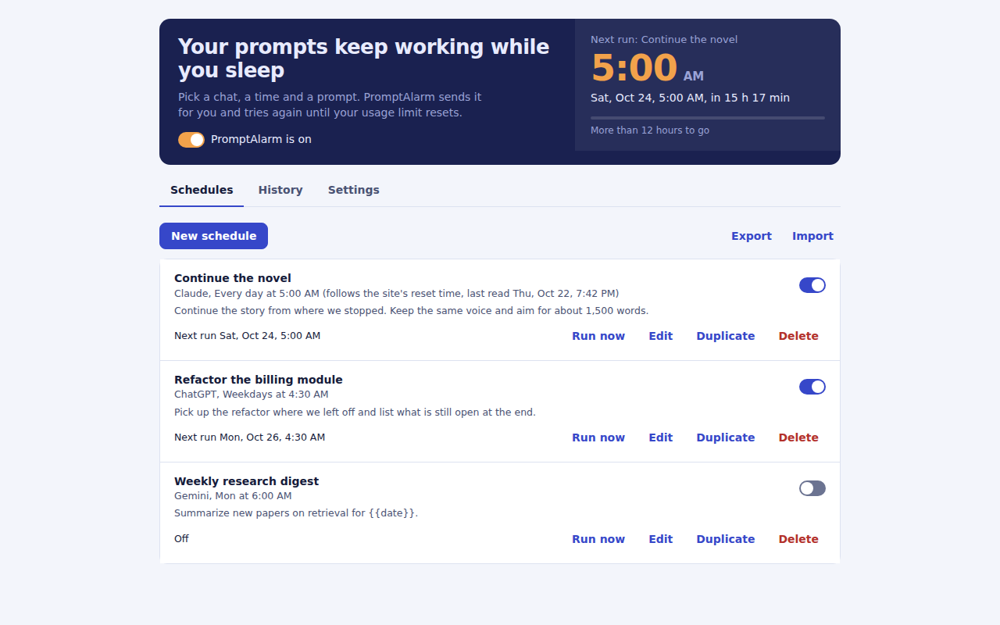
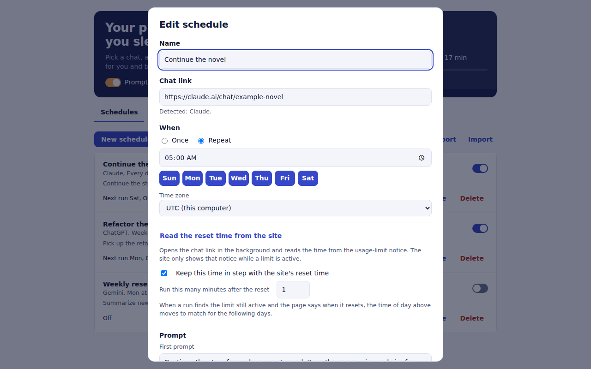

How it works
Choose the chat
Paste the link of the conversation you want to continue, from claude.ai, chatgpt.com or gemini.google.com.
Set the time and prompt
Once or every day, in any time zone. Add follow-up prompts that go out after each reply finishes.
Leave Chrome open
At the time you chose, PromptAlarm opens the chat, types the prompt and presses send, the way you would.
What you get
Retries until the limit resets
If a limit is still active, it tries again on an interval and inside a time window you control.
Reads the reset time from the site
One button reads the time from the site's own limit notice and sets your schedule to match. Repeating schedules can follow it automatically.
Never sends twice
Every step is saved, so after a restart it checks the page before sending again. It never overwrites text you already typed.
Catches up after a closed browser
Missed the time? It runs within the grace period you set, or tells you plainly that it was missed.
Plain-language history
Sent, not sent and why, or missed. No guessing what happened overnight.
Private by design
No account, no server, no analytics. Schedules and history stay in your browser, and replies are never read or stored.
Inside the extension


Good to know
- Chrome must be open and the computer awake at the scheduled time. An optional keep-awake setting helps.
- PromptAlarm cannot get around a usage limit. It sends your prompt when the site lets you send it.
- The reset time can only be read while the site is showing a usage-limit notice.
- Chat sites change often. If the message box cannot be found, PromptAlarm tells you instead of guessing.